pacman::p_load(survival, randomForestSRC, MASS, SMCRM, tidyverse, here, skimr, corrplot, rpart, e1071)Case Study 4
Load Data and Packages
data(acquisitionRetention)
rawdf <- acquisitionRetentionstr(rawdf)'data.frame': 500 obs. of 15 variables:
$ customer : num 1 2 3 4 5 6 7 8 9 10 ...
$ acquisition: num 1 1 1 0 1 1 1 1 0 0 ...
$ duration : num 1635 1039 1288 0 1631 ...
$ profit : num 6134 3524 4081 -638 5446 ...
$ acq_exp : num 694 460 249 638 589 ...
$ ret_exp : num 972 450 805 0 920 ...
$ acq_exp_sq : num 480998 211628 62016 407644 346897 ...
$ ret_exp_sq : num 943929 202077 648089 0 846106 ...
$ freq : num 6 11 21 0 2 7 15 13 0 0 ...
$ freq_sq : num 36 121 441 0 4 49 225 169 0 0 ...
$ crossbuy : num 5 6 6 0 9 4 5 5 0 0 ...
$ sow : num 95 22 90 0 80 48 51 23 0 0 ...
$ industry : num 1 0 0 0 0 1 0 1 0 1 ...
$ revenue : num 47.2 45.1 29.1 40.6 48.7 ...
$ employees : num 898 686 1423 181 631 ...head(rawdf) customer acquisition duration profit acq_exp ret_exp acq_exp_sq ret_exp_sq
1 1 1 1635 6134.30 693.54 971.56 480997.73 943928.8
2 2 1 1039 3523.62 460.03 449.53 211627.60 202077.2
3 3 1 1288 4080.62 249.03 805.04 62015.94 648089.4
4 4 0 0 -638.47 638.47 0.00 407643.94 0.0
5 5 1 1631 5446.32 588.98 919.84 346897.44 846105.6
6 6 1 942 3488.07 568.65 365.11 323362.82 133305.3
freq freq_sq crossbuy sow industry revenue employees
1 6 36 5 95 1 47.20 898
2 11 121 6 22 0 45.11 686
3 21 441 6 90 0 29.10 1423
4 0 0 0 0 0 40.64 181
5 2 4 9 80 0 48.72 631
6 7 49 4 48 1 35.43 617skim(rawdf)| Name | rawdf |
| Number of rows | 500 |
| Number of columns | 15 |
| _______________________ | |
| Column type frequency: | |
| numeric | 15 |
| ________________________ | |
| Group variables | None |
Variable type: numeric
| skim_variable | n_missing | complete_rate | mean | sd | p0 | p25 | p50 | p75 | p100 | hist |
|---|---|---|---|---|---|---|---|---|---|---|
| customer | 0 | 1 | 250.50 | 144.48 | 1.00 | 125.75 | 250.50 | 375.25 | 500.00 | ▇▇▇▇▇ |
| acquisition | 0 | 1 | 0.68 | 0.47 | 0.00 | 0.00 | 1.00 | 1.00 | 1.00 | ▃▁▁▁▇ |
| duration | 0 | 1 | 742.45 | 544.47 | 0.00 | 0.00 | 957.50 | 1146.25 | 1673.00 | ▇▁▅▇▂ |
| profit | 0 | 1 | 2403.84 | 2083.19 | -1027.04 | -316.32 | 3369.93 | 3931.60 | 6134.30 | ▆▁▂▇▁ |
| acq_exp | 0 | 1 | 493.35 | 166.95 | 1.21 | 384.14 | 491.66 | 600.20 | 1027.04 | ▁▅▇▃▁ |
| ret_exp | 0 | 1 | 336.26 | 266.59 | 0.00 | 0.00 | 398.10 | 514.26 | 1094.96 | ▇▆▇▁▁ |
| acq_exp_sq | 0 | 1 | 271211.10 | 172829.25 | 1.46 | 147561.95 | 241729.67 | 360246.04 | 1054811.16 | ▇▇▂▁▁ |
| ret_exp_sq | 0 | 1 | 183999.83 | 201982.60 | 0.00 | 0.00 | 158479.66 | 264466.08 | 1198937.40 | ▇▂▁▁▁ |
| freq | 0 | 1 | 6.22 | 5.53 | 0.00 | 0.00 | 6.00 | 11.00 | 21.00 | ▇▃▅▂▁ |
| freq_sq | 0 | 1 | 69.25 | 84.55 | 0.00 | 0.00 | 36.00 | 121.00 | 441.00 | ▇▂▁▁▁ |
| crossbuy | 0 | 1 | 4.05 | 3.24 | 0.00 | 0.00 | 5.00 | 7.00 | 11.00 | ▇▃▆▅▂ |
| sow | 0 | 1 | 38.88 | 31.81 | 0.00 | 0.00 | 44.00 | 66.00 | 116.00 | ▇▃▆▃▁ |
| industry | 0 | 1 | 0.52 | 0.50 | 0.00 | 0.00 | 1.00 | 1.00 | 1.00 | ▇▁▁▁▇ |
| revenue | 0 | 1 | 40.54 | 9.67 | 14.49 | 33.53 | 41.43 | 47.52 | 65.10 | ▁▅▇▆▂ |
| employees | 0 | 1 | 671.53 | 242.99 | 18.00 | 503.00 | 657.50 | 826.00 | 1461.00 | ▁▇▇▃▁ |
rawdf <- rawdf %>% mutate_at(c('industry', 'acquisition'), as.factor)#column definitions
?acquisitionRetentionrawdf %>% select_if(is.numeric) %>% cor() %>% corrplot(method = 'number', number.cex = 0.6)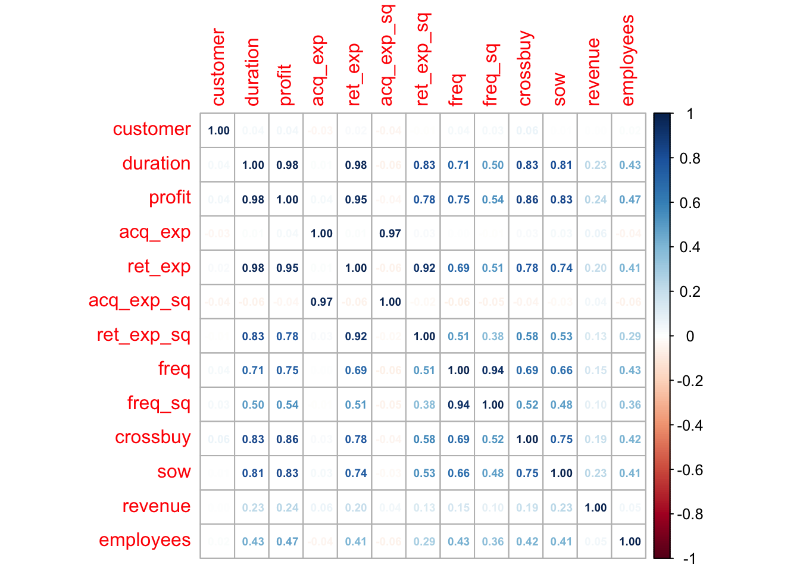
lots of multicollinearity. Random Forest will be able to handle this, so not a huge issue. But important to note for our narrative.
# Survival Plot
surv <- data.frame(duration = seq(0,max(rawdf$duration), by = 1))
surv1 <- surv %>%
group_by(duration) %>%
mutate(dist = sum(rawdf$duration > duration))
#greater than removes all of the results where duration == 0, i.e. those not acquired
surv1 %>% ggplot(aes(x = duration, y = dist)) +
geom_line() +
scale_y_continuous(name = 'Count', sec.axis = sec_axis(transform = ~./max(surv1$dist), name = 'Distribution'))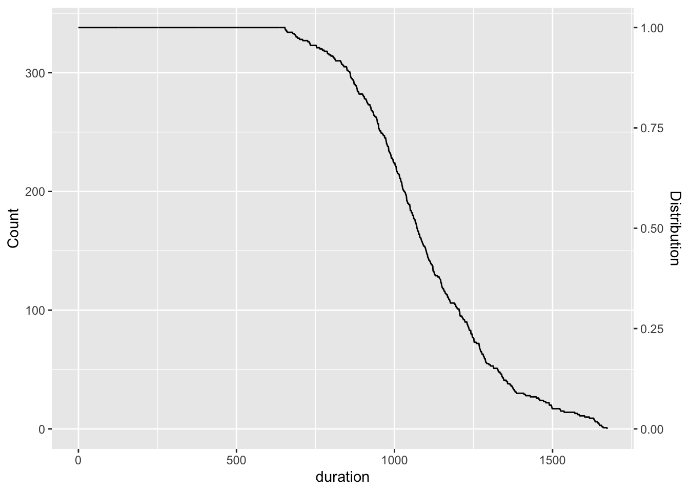
for predicting those acquired: remove profit, duration, ret_exp, ret_exp_sq, freq, freq_sq, crossbuy, sow. these variables are always zero when acquisition == 0. Basically gives the answers ahead of time, can’t use to predict
sum(rawdf[which(rawdf$acquisition == 0),]$duration)[1] 0rawdf %>% select(ends_with('sq')) %>% names()[1] "acq_exp_sq" "ret_exp_sq" "freq_sq" Gets names of variables with a square term. Idea is that these variables have been shown to have a quadratic relationship to response variables. This is mostly necessary for the steps when determining partial dependence, otherwise we would usually exclude these variables.
test and train split
set.seed(321)
acq_part <- sample(nrow(rawdf),0.8*nrow(rawdf),replace = F)
acq_train1 <- rawdf[acq_part,]
acq_test1 <- rawdf[-acq_part,]Two test and train splits are performed, one on the raw data and one on the data filtered just to those which were acquired.
Predicting Acquisition
acq_train1 <- acq_train1 %>% select(-c(profit, duration, ret_exp, ret_exp_sq, freq, freq_sq, crossbuy, sow))
acq_test1 <- acq_test1 %>% select(-c(profit, duration, ret_exp, ret_exp_sq, freq, freq_sq, crossbuy, sow)) note: did not remove customer so that I can use it to join predictions back on dataset later. Will remove from model formulae.
Logistic Regression
doing logistic regression to set up a baseline for our random forest performance.
set.seed(321)
logfit1 <- step(glm(acquisition ~ . -customer,
data = acq_train1, family = binomial),
direction = "backward", trace = 0)summary(logfit1)
Call:
glm(formula = acquisition ~ (customer + acq_exp + acq_exp_sq +
industry + revenue + employees) - customer, family = binomial,
data = acq_train1)
Coefficients:
Estimate Std. Error z value Pr(>|z|)
(Intercept) -1.438e+01 1.683e+00 -8.541 < 2e-16 ***
acq_exp 2.779e-02 4.795e-03 5.796 6.79e-09 ***
acq_exp_sq -2.768e-05 4.755e-06 -5.822 5.82e-09 ***
industry1 1.810e+00 3.362e-01 5.383 7.31e-08 ***
revenue 8.263e-02 1.646e-02 5.020 5.17e-07 ***
employees 8.047e-03 9.340e-04 8.615 < 2e-16 ***
---
Signif. codes: 0 '***' 0.001 '**' 0.01 '*' 0.05 '.' 0.1 ' ' 1
(Dispersion parameter for binomial family taken to be 1)
Null deviance: 504.46 on 399 degrees of freedom
Residual deviance: 273.31 on 394 degrees of freedom
AIC: 285.31
Number of Fisher Scoring iterations: 6car::vif(logfit1) acq_exp acq_exp_sq industry revenue employees
28.071229 28.183096 1.187488 1.088178 1.254391 set.seed(321)
logfit2 <- step(glm(acquisition ~ . -acq_exp_sq -customer,
data = acq_train1, family = binomial),
direction = "backward", trace = 0)summary(logfit2)
Call:
glm(formula = acquisition ~ industry + revenue + employees, family = binomial,
data = acq_train1)
Coefficients:
Estimate Std. Error z value Pr(>|z|)
(Intercept) -7.7558047 0.9252495 -8.382 < 2e-16 ***
industry1 1.3923096 0.2924451 4.761 1.93e-06 ***
revenue 0.0834765 0.0153024 5.455 4.89e-08 ***
employees 0.0074872 0.0008474 8.836 < 2e-16 ***
---
Signif. codes: 0 '***' 0.001 '**' 0.01 '*' 0.05 '.' 0.1 ' ' 1
(Dispersion parameter for binomial family taken to be 1)
Null deviance: 504.46 on 399 degrees of freedom
Residual deviance: 320.18 on 396 degrees of freedom
AIC: 328.18
Number of Fisher Scoring iterations: 5car::vif(logfit2) industry revenue employees
1.089928 1.093918 1.153956 plot(logfit2)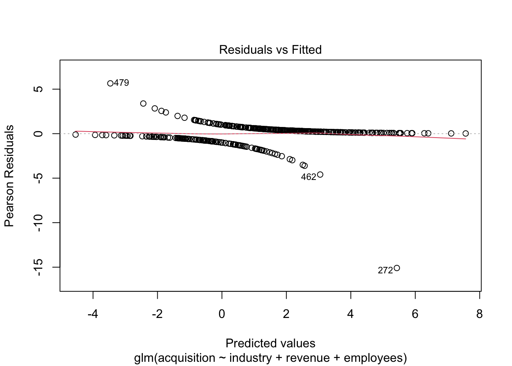
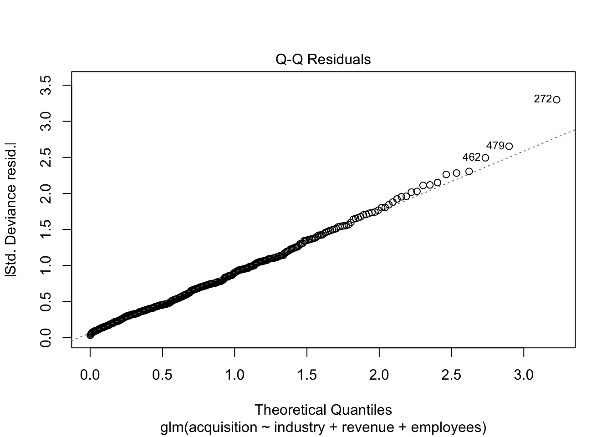
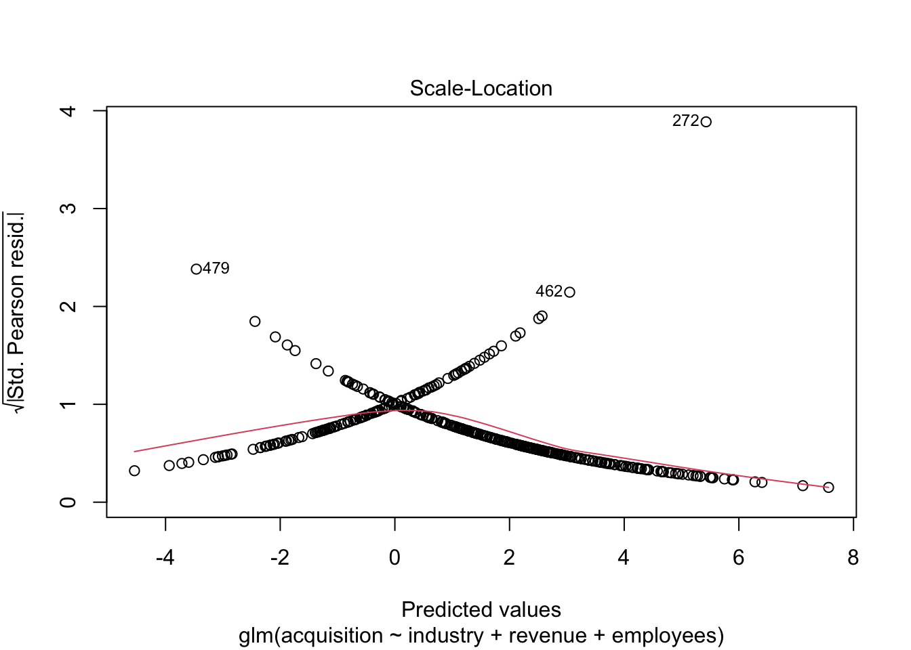
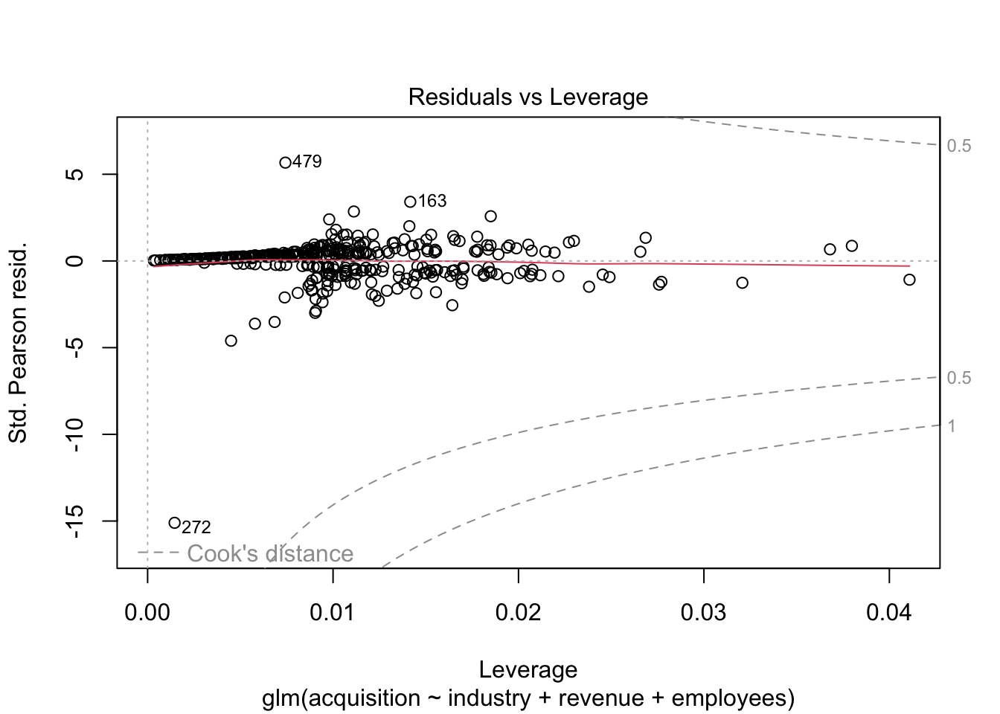
extreme values are causing lots of issues with logistic regression. May return to this to see of we can get better performance by normalizing or removing extreme values.
acq_preds <- data.frame(actual = acq_test1$acquisition,
log_preds = predict(logfit2, acq_test1, type = 'response')) %>% mutate(
log_preds = as.factor(ifelse(log_preds >= 0.5, 1, 0))
)Support Vector Machines—————HOLLY PART
set.seed(321)
svmfit1 <- svm(acquisition ~ acq_exp + industry + revenue + employees,
data = acq_train1,
type = "C-classification",
kernel = "radial",
cost = 1, #<--we can adjust this if needed
scale = TRUE
)
summary(svmfit1)
Call:
svm(formula = acquisition ~ acq_exp + industry + revenue + employees,
data = acq_train1, type = "C-classification", kernel = "radial",
cost = 1, scale = TRUE)
Parameters:
SVM-Type: C-classification
SVM-Kernel: radial
cost: 1
Number of Support Vectors: 181
( 91 90 )
Number of Classes: 2
Levels:
0 1Running SVM against the test data…
svm_preds <- predict(svmfit1, acq_test1)add the SVM predictions to the preds dataframe
acq_preds$svm_preds <- svm_predsNo surprise the model has high sensitivity (i.e. identifying the positive class), but low specificity (46.88% aka non-acquisition). Accuracy is pretty decent 76%
svm_cm <- caret::confusionMatrix(acq_preds$svm_preds,
reference = acq_preds$actual,
positive = '1')
print(svm_cm)Confusion Matrix and Statistics
Reference
Prediction 0 1
0 14 7
1 18 61
Accuracy : 0.75
95% CI : (0.6534, 0.8312)
No Information Rate : 0.68
P-Value [Acc > NIR] : 0.07961
Kappa : 0.368
Mcnemar's Test P-Value : 0.04550
Sensitivity : 0.8971
Specificity : 0.4375
Pos Pred Value : 0.7722
Neg Pred Value : 0.6667
Prevalence : 0.6800
Detection Rate : 0.6100
Detection Prevalence : 0.7900
Balanced Accuracy : 0.6673
'Positive' Class : 1
#Tuning SVM model to see if there is a better SVM performance model
set.seed(321)
tune.out <- tune(svm,
acquisition ~ acq_exp + industry + revenue + employees,
data = acq_train1,
kernel = "radial",
ranges = list(gamma = seq(.01,.1, by = .01), cost = seq(.1, 1, by = .1)))
svmfit2 <- tune.out$best.model
summary(svmfit2)
Call:
best.tune(METHOD = svm, train.x = acquisition ~ acq_exp + industry +
revenue + employees, data = acq_train1, ranges = list(gamma = seq(0.01,
0.1, by = 0.01), cost = seq(0.1, 1, by = 0.1)), kernel = "radial")
Parameters:
SVM-Type: C-classification
SVM-Kernel: radial
cost: 0.6
Number of Support Vectors: 224
( 111 113 )
Number of Classes: 2
Levels:
0 1svm_preds2 <- predict(svmfit2, acq_test1)acq_preds$svm_preds2 <- svm_preds2svm_cm2 <- caret::confusionMatrix(acq_preds$svm_preds2,
reference = acq_preds$actual,
positive = '1')
print(svm_cm2)Confusion Matrix and Statistics
Reference
Prediction 0 1
0 12 4
1 20 64
Accuracy : 0.76
95% CI : (0.6643, 0.8398)
No Information Rate : 0.68
P-Value [Acc > NIR] : 0.05132
Kappa : 0.3644
Mcnemar's Test P-Value : 0.00220
Sensitivity : 0.9412
Specificity : 0.3750
Pos Pred Value : 0.7619
Neg Pred Value : 0.7500
Prevalence : 0.6800
Detection Rate : 0.6400
Detection Prevalence : 0.8400
Balanced Accuracy : 0.6581
'Positive' Class : 1
Tuning the SVM (svmfit2) only made the performance slightly worse
Decision Trees
I’m only doing this step to correlate back to the importance variable for our random forest. Basically so we can visualize the importance variables and where they are in the trees.
set.seed(321)
dtfit1 <- rpart(acquisition ~ . -customer, data = acq_train1)summary(dtfit1)Call:
rpart(formula = acquisition ~ . - customer, data = acq_train1)
n= 400
CP nsplit rel error xerror xstd
1 0.30769231 0 1.0000000 1.0000000 0.07205767
2 0.07307692 1 0.6923077 0.8307692 0.06830146
3 0.02307692 3 0.5461538 0.6076923 0.06124811
4 0.01538462 4 0.5230769 0.6769231 0.06373020
5 0.01000000 6 0.4923077 0.6846154 0.06398849
Variable importance
employees revenue acq_exp acq_exp_sq industry
60 14 11 11 4
Node number 1: 400 observations, complexity param=0.3076923
predicted class=1 expected loss=0.325 P(node) =1
class counts: 130 270
probabilities: 0.325 0.675
left son=2 (158 obs) right son=3 (242 obs)
Primary splits:
employees < 581.5 to the left, improve=47.505440, (0 missing)
acq_exp < 750.61 to the right, improve=12.653150, (0 missing)
acq_exp_sq < 563426.9 to the right, improve=12.653150, (0 missing)
revenue < 33.78 to the left, improve=11.740110, (0 missing)
industry splits as LR, improve= 7.686865, (0 missing)
Surrogate splits:
acq_exp < 743.265 to the right, agree=0.627, adj=0.057, (0 split)
acq_exp_sq < 552458.4 to the right, agree=0.627, adj=0.057, (0 split)
revenue < 33.78 to the left, agree=0.618, adj=0.032, (0 split)
Node number 2: 158 observations, complexity param=0.07307692
predicted class=0 expected loss=0.3734177 P(node) =0.395
class counts: 99 59
probabilities: 0.627 0.373
left son=4 (80 obs) right son=5 (78 obs)
Primary splits:
revenue < 41.01 to the left, improve=9.746965, (0 missing)
employees < 427.5 to the left, improve=6.701415, (0 missing)
industry splits as LR, improve=4.218119, (0 missing)
acq_exp < 750.61 to the right, improve=3.105963, (0 missing)
acq_exp_sq < 563426.9 to the right, improve=3.105963, (0 missing)
Surrogate splits:
industry splits as LR, agree=0.557, adj=0.103, (0 split)
acq_exp < 685.885 to the right, agree=0.551, adj=0.090, (0 split)
acq_exp_sq < 470439.9 to the right, agree=0.551, adj=0.090, (0 split)
employees < 309.5 to the left, agree=0.544, adj=0.077, (0 split)
Node number 3: 242 observations
predicted class=1 expected loss=0.1280992 P(node) =0.605
class counts: 31 211
probabilities: 0.128 0.872
Node number 4: 80 observations
predicted class=0 expected loss=0.2 P(node) =0.2
class counts: 64 16
probabilities: 0.800 0.200
Node number 5: 78 observations, complexity param=0.07307692
predicted class=1 expected loss=0.4487179 P(node) =0.195
class counts: 35 43
probabilities: 0.449 0.551
left son=10 (31 obs) right son=11 (47 obs)
Primary splits:
employees < 425.5 to the left, improve=5.381782, (0 missing)
revenue < 55.46 to the left, improve=2.789744, (0 missing)
acq_exp < 660.695 to the right, improve=1.851282, (0 missing)
acq_exp_sq < 436518.6 to the right, improve=1.851282, (0 missing)
industry splits as LR, improve=1.461401, (0 missing)
Surrogate splits:
acq_exp < 601.445 to the right, agree=0.641, adj=0.097, (0 split)
acq_exp_sq < 361751 to the right, agree=0.641, adj=0.097, (0 split)
revenue < 60.835 to the right, agree=0.615, adj=0.032, (0 split)
Node number 10: 31 observations, complexity param=0.01538462
predicted class=0 expected loss=0.3225806 P(node) =0.0775
class counts: 21 10
probabilities: 0.677 0.323
left son=20 (7 obs) right son=21 (24 obs)
Primary splits:
acq_exp < 660.695 to the right, improve=1.8817200, (0 missing)
acq_exp_sq < 436518.6 to the right, improve=1.8817200, (0 missing)
industry splits as LR, improve=1.6492270, (0 missing)
revenue < 47.615 to the left, improve=0.8733871, (0 missing)
employees < 388.5 to the right, improve=0.8418654, (0 missing)
Surrogate splits:
acq_exp_sq < 436518.6 to the right, agree=1.000, adj=1.000, (0 split)
employees < 317.5 to the left, agree=0.806, adj=0.143, (0 split)
Node number 11: 47 observations, complexity param=0.02307692
predicted class=1 expected loss=0.2978723 P(node) =0.1175
class counts: 14 33
probabilities: 0.298 0.702
left son=22 (7 obs) right son=23 (40 obs)
Primary splits:
acq_exp < 288.47 to the left, improve=2.8524320, (0 missing)
acq_exp_sq < 83401.81 to the left, improve=2.8524320, (0 missing)
revenue < 53.485 to the left, improve=1.7108570, (0 missing)
employees < 475.5 to the left, improve=0.4595745, (0 missing)
industry splits as LR, improve=0.1892041, (0 missing)
Surrogate splits:
acq_exp_sq < 83401.81 to the left, agree=1, adj=1, (0 split)
Node number 20: 7 observations
predicted class=0 expected loss=0 P(node) =0.0175
class counts: 7 0
probabilities: 1.000 0.000
Node number 21: 24 observations, complexity param=0.01538462
predicted class=0 expected loss=0.4166667 P(node) =0.06
class counts: 14 10
probabilities: 0.583 0.417
left son=42 (12 obs) right son=43 (12 obs)
Primary splits:
industry splits as LR, improve=3.0000000, (0 missing)
employees < 349.5 to the right, improve=1.3333330, (0 missing)
revenue < 47.615 to the left, improve=0.8414918, (0 missing)
acq_exp < 401.945 to the left, improve=0.3389356, (0 missing)
acq_exp_sq < 161575.9 to the left, improve=0.3389356, (0 missing)
Surrogate splits:
acq_exp < 583.63 to the left, agree=0.708, adj=0.417, (0 split)
acq_exp_sq < 341094 to the left, agree=0.708, adj=0.417, (0 split)
revenue < 49.645 to the right, agree=0.708, adj=0.417, (0 split)
employees < 325.5 to the right, agree=0.625, adj=0.250, (0 split)
Node number 22: 7 observations
predicted class=0 expected loss=0.2857143 P(node) =0.0175
class counts: 5 2
probabilities: 0.714 0.286
Node number 23: 40 observations
predicted class=1 expected loss=0.225 P(node) =0.1
class counts: 9 31
probabilities: 0.225 0.775
Node number 42: 12 observations
predicted class=0 expected loss=0.1666667 P(node) =0.03
class counts: 10 2
probabilities: 0.833 0.167
Node number 43: 12 observations
predicted class=1 expected loss=0.3333333 P(node) =0.03
class counts: 4 8
probabilities: 0.333 0.667 rattle::fancyRpartPlot(dtfit1, sub = '')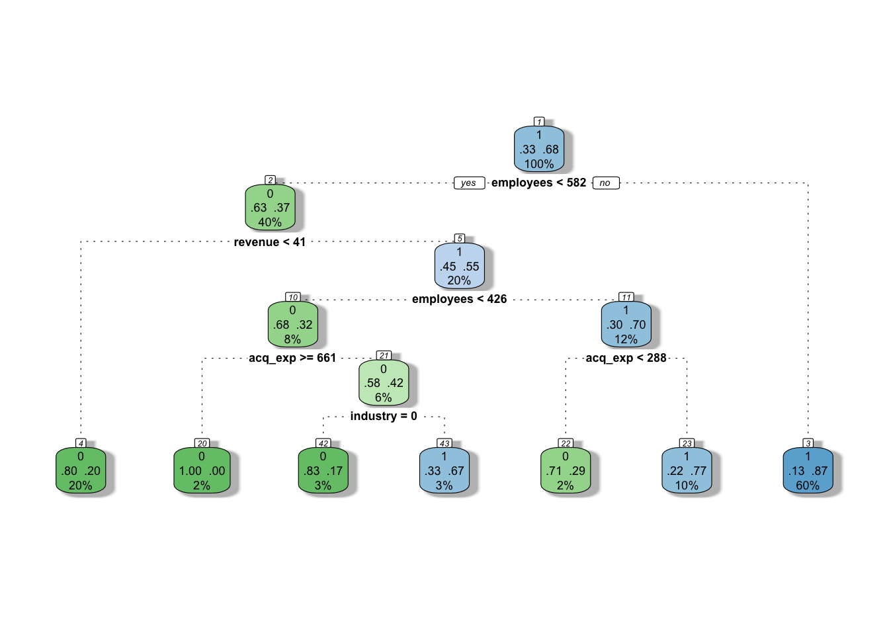
acq_preds$dt_preds <- predict(dtfit1, acq_test1)Random Forest
set.seed(321)
rffit1 <- rfsrc(acquisition ~ acq_exp + industry + revenue + employees,
data = acq_train1,
importance = TRUE,
ntree = 100)rffit1 Sample size: 400
Frequency of class labels: 130, 270
Number of trees: 100
Forest terminal node size: 1
Average no. of terminal nodes: 60.56
No. of variables tried at each split: 2
Total no. of variables: 4
Resampling used to grow trees: swor
Resample size used to grow trees: 253
Analysis: RF-C
Family: class
Splitting rule: gini *random*
Number of random split points: 10
Imbalanced ratio: 2.0769
(OOB) Brier score: 0.13987867
(OOB) Normalized Brier score: 0.55951468
(OOB) AUC: 0.86122507
(OOB) Log-loss: 0.43233875
(OOB) PR-AUC: 0.7502889
(OOB) G-mean: 0.73805782
(OOB) Requested performance error: 0.1975, 0.4, 0.1
Confusion matrix:
predicted
observed 0 1 class.error
0 80 50 0.3846
1 28 242 0.1037
(OOB) Misclassification rate: 0.195rffit1$importance all 0 1
acq_exp 0.20920425 -0.5959310 1.1195294
industry 0.06171539 0.2571913 0.1218193
revenue 0.17061121 0.3408307 0.5154668
employees 0.30492305 0.8719412 0.7943424data.frame(importance = rffit1$importance[,3]) %>%
tibble::rownames_to_column(var = "variable") %>%
ggplot(aes(x = reorder(variable,importance), y = importance)) +
geom_bar(stat = "identity", fill = "orange", color = "black")+
coord_flip() +
labs(x = "Variables", y = "Variable importance")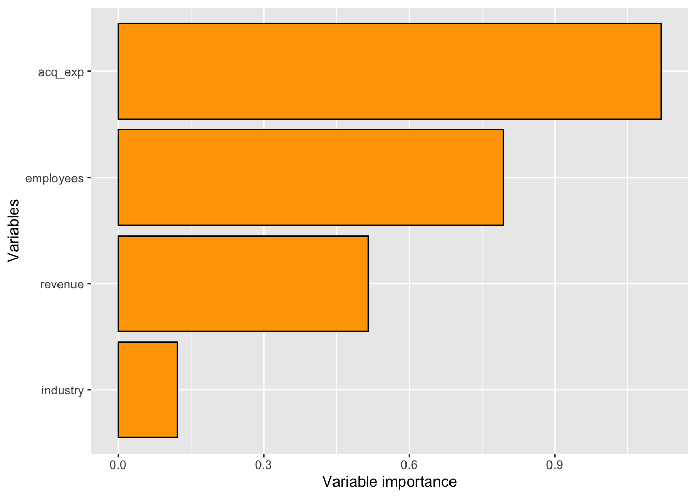
acq_mindepth <- max.subtree(rffit1, sub.order = T)print(round(acq_mindepth$order, 3)[,1]) acq_exp industry revenue employees
1.47 1.97 1.28 0.62 find.interaction(rffit1, method = 'vimp', importance = 'permute')Pairing employees with acq_exp
Pairing employees with revenue
Pairing employees with industry
Pairing acq_exp with revenue
Pairing acq_exp with industry
Pairing revenue with industry
Method: vimp
No. of variables: 4
Variables sorted by VIMP?: TRUE
No. of variables used for pairing: 4
Total no. of paired interactions: 6
Monte Carlo replications: 1
Type of noising up used for VIMP: permute
Var 1 Var 2 Paired Additive Difference
employees:acq_exp 0.1013 0.0020 0.1244 0.1033 0.0211
employees:revenue 0.1013 0.0172 0.1103 0.1185 -0.0081
employees:industry 0.1013 0.0271 0.1156 0.1283 -0.0127
acq_exp:revenue 0.0088 0.0165 0.0402 0.0252 0.0150
acq_exp:industry 0.0088 0.0245 0.0276 0.0333 -0.0057
revenue:industry 0.0278 0.0222 0.0423 0.0501 -0.0078very little difference between additive and paired values for each variable so little interaction
acq_test_prob <- predict(rffit1, newdata = acq_test1)$predicted[,2]
acq_preds$rf_preds <- acq_test_prob
acq_preds <- acq_preds %>% mutate(rf_preds = as.factor(ifelse(rf_preds >= 0.5, 1, 0)))###Logistic Confusion Matrix
caret::confusionMatrix(acq_preds$log_preds, reference = acq_preds$actual, positive = '1')Confusion Matrix and Statistics
Reference
Prediction 0 1
0 13 7
1 19 61
Accuracy : 0.74
95% CI : (0.6427, 0.8226)
No Information Rate : 0.68
P-Value [Acc > NIR] : 0.11802
Kappa : 0.3367
Mcnemar's Test P-Value : 0.03098
Sensitivity : 0.8971
Specificity : 0.4062
Pos Pred Value : 0.7625
Neg Pred Value : 0.6500
Prevalence : 0.6800
Detection Rate : 0.6100
Detection Prevalence : 0.8000
Balanced Accuracy : 0.6517
'Positive' Class : 1
logistic regression performs just barely worse than the random forest (below). It is worse on the full dataset, so we can still continue with random forest, but we may just need some additional tuning for either model to see if we can improve one over the other. Also worth mentioning that logistic didn’t really pass it’s assumptions, so may be another reason to avoid logistic.
Random Forest Confusion Matrix
caret::confusionMatrix(acq_preds$rf_preds, reference = acq_preds$actual, positive = '1')Confusion Matrix and Statistics
Reference
Prediction 0 1
0 13 6
1 19 62
Accuracy : 0.75
95% CI : (0.6534, 0.8312)
No Information Rate : 0.68
P-Value [Acc > NIR] : 0.07961
Kappa : 0.3563
Mcnemar's Test P-Value : 0.01640
Sensitivity : 0.9118
Specificity : 0.4062
Pos Pred Value : 0.7654
Neg Pred Value : 0.6842
Prevalence : 0.6800
Detection Rate : 0.6200
Detection Prevalence : 0.8100
Balanced Accuracy : 0.6590
'Positive' Class : 1
Good sensitivity, but bad specificity. This means we should have most of the actual acquired records in our dataset for duration, but we will let them in at the cost of several of the un-acquired records being let into the dataset.
SVM Confusion Matrix
caret::confusionMatrix(acq_preds$svm_preds, reference = acq_preds$actual, positive = '1')Confusion Matrix and Statistics
Reference
Prediction 0 1
0 14 7
1 18 61
Accuracy : 0.75
95% CI : (0.6534, 0.8312)
No Information Rate : 0.68
P-Value [Acc > NIR] : 0.07961
Kappa : 0.368
Mcnemar's Test P-Value : 0.04550
Sensitivity : 0.8971
Specificity : 0.4375
Pos Pred Value : 0.7722
Neg Pred Value : 0.6667
Prevalence : 0.6800
Detection Rate : 0.6100
Detection Prevalence : 0.7900
Balanced Accuracy : 0.6673
'Positive' Class : 1
Applying the acquisition model to the full dataset:
acq_raw_prob <- predict(rffit1, newdata = select(rawdf, names(acq_test1)))$predicted[,2]
durdf <- rawdf %>% bind_cols(preds = acq_raw_prob) %>% mutate(
acq_preds = as.factor(ifelse(preds >= 0.5, 1, 0))
)One last confusion matrix to check how it did on the whole dataset:
caret::confusionMatrix(durdf$acq_preds, durdf$acquisition, positive = '1')Confusion Matrix and Statistics
Reference
Prediction 0 1
0 143 6
1 19 332
Accuracy : 0.95
95% CI : (0.9271, 0.9674)
No Information Rate : 0.676
P-Value [Acc > NIR] : <2e-16
Kappa : 0.8834
Mcnemar's Test P-Value : 0.0164
Sensitivity : 0.9822
Specificity : 0.8827
Pos Pred Value : 0.9459
Neg Pred Value : 0.9597
Prevalence : 0.6760
Detection Rate : 0.6640
Detection Prevalence : 0.7020
Balanced Accuracy : 0.9325
'Positive' Class : 1
so for some reason, predicting on training set leads to 100% accuracy for training records, despite their being gaps in random forest output earlier. This is great for building our subset for predicting duration, but we cannot report acquisition performance on these results, only the earlier ones on the test set.
Predicting Duration
durdf1 <- durdf %>% filter(acq_preds == 1) %>% select(-acquisition)
set.seed(321)
dur_part <- sample(nrow(durdf1),0.8*nrow(durdf1),replace = F)
dur_train1 <- durdf1[dur_part,]
dur_test1 <- durdf1[-dur_part,]names(dur_train1) [1] "customer" "duration" "profit" "acq_exp" "ret_exp"
[6] "acq_exp_sq" "ret_exp_sq" "freq" "freq_sq" "crossbuy"
[11] "sow" "industry" "revenue" "employees" "preds"
[16] "acq_preds" set.seed(321)
rfdur <- rfsrc(duration ~ profit + acq_exp + ret_exp + freq + crossbuy + sow + industry + revenue + employees, #-customer -acq_exp_sq -ret_exp_sq -freq_sq,
data = dur_train1,
importance = TRUE,
ntree = 500)rfdur Sample size: 280
Number of trees: 500
Forest terminal node size: 5
Average no. of terminal nodes: 34.214
No. of variables tried at each split: 3
Total no. of variables: 9
Resampling used to grow trees: swor
Resample size used to grow trees: 177
Analysis: RF-R
Family: regr
Splitting rule: mse *random*
Number of random split points: 10
(OOB) R squared: 0.9753718
(OOB) Requested performance error: 2420.98205213data.frame(importance = rfdur$importance) %>%
tibble::rownames_to_column(var = "variable") %>%
ggplot(aes(x = reorder(variable,importance), y = importance)) +
geom_bar(stat = "identity", fill = "orange", color = "black")+
coord_flip() +
labs(x = "Variables", y = "Variable importance")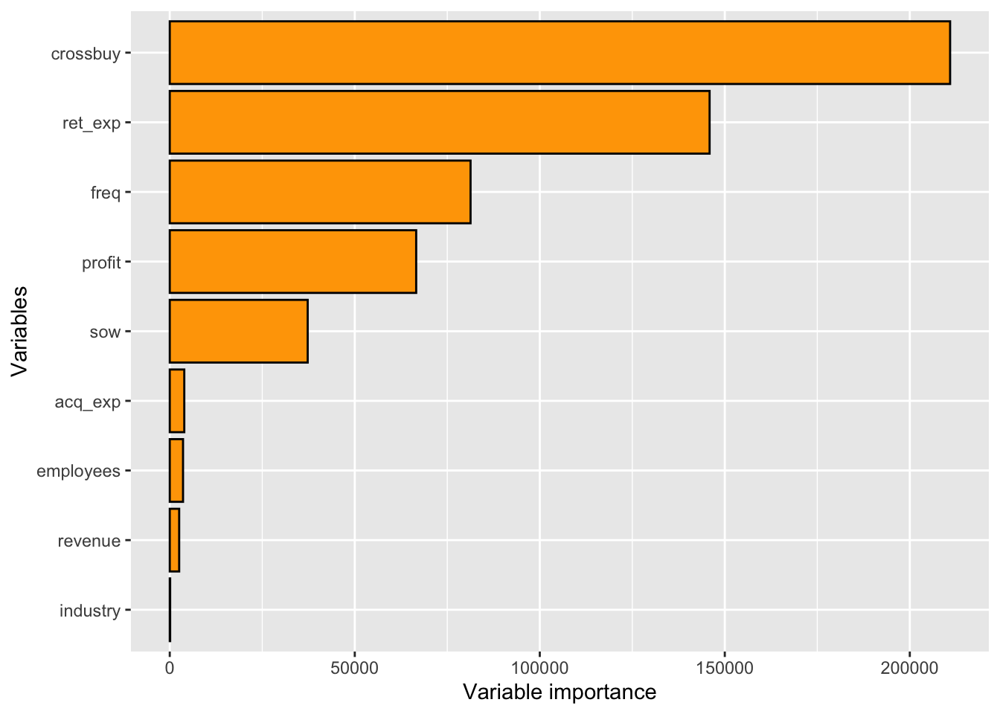
# theme_nice rfdur$importance profit acq_exp ret_exp freq crossbuy sow
66596.4656 3924.4559 145895.7477 81290.2168 210894.6809 37276.7675
industry revenue employees
105.0242 2543.1627 3587.0100 Minimal Depth
dur_mindepth <- max.subtree(rfdur,
sub.order = TRUE)print(round(dur_mindepth$order, 3)[,1]) profit acq_exp ret_exp freq crossbuy sow industry revenue
1.974 3.984 1.586 2.726 2.948 3.990 7.682 4.732
employees
4.326 dur_mindepth$sub.order profit acq_exp ret_exp freq crossbuy sow industry
profit 0.1942289 0.4318192 0.2525983 0.4142007 0.5724637 0.5596874 0.8217917
acq_exp 0.5539497 0.3947206 0.4765667 0.6584514 0.7662858 0.7326850 0.8997585
ret_exp 0.2605732 0.4150131 0.1543483 0.3349335 0.5116082 0.4903398 0.8073177
freq 0.4699447 0.6144395 0.3798628 0.2709533 0.6764052 0.6658914 0.8511000
crossbuy 0.5339468 0.6359098 0.4428069 0.6230860 0.2917158 0.6886878 0.8712114
sow 0.6315249 0.7278318 0.5778807 0.7096276 0.7976616 0.3955185 0.9182403
industry 0.8935724 0.9214311 0.8702517 0.9371273 0.9559453 0.9509128 0.7544537
revenue 0.6931536 0.7340379 0.5832325 0.7374688 0.8381370 0.8045320 0.9316565
employees 0.6380847 0.7106279 0.5350913 0.6997302 0.8090930 0.7779019 0.9331769
revenue employees
profit 0.5262826 0.4895716
acq_exp 0.7406204 0.7171366
ret_exp 0.4969874 0.4489508
freq 0.6382911 0.6459213
crossbuy 0.6895152 0.6684833
sow 0.7675002 0.7559092
industry 0.9430447 0.9438455
revenue 0.4692727 0.7685113
employees 0.7769390 0.4306620find.interaction(rfdur,
method = "vimp",
importance = "permute")Pairing crossbuy with ret_exp
Pairing crossbuy with freq
Pairing crossbuy with profit
Pairing crossbuy with sow
Pairing crossbuy with acq_exp
Pairing crossbuy with employees
Pairing crossbuy with revenue
Pairing crossbuy with industry
Pairing ret_exp with freq
Pairing ret_exp with profit
Pairing ret_exp with sow
Pairing ret_exp with acq_exp
Pairing ret_exp with employees
Pairing ret_exp with revenue
Pairing ret_exp with industry
Pairing freq with profit
Pairing freq with sow
Pairing freq with acq_exp
Pairing freq with employees
Pairing freq with revenue
Pairing freq with industry
Pairing profit with sow
Pairing profit with acq_exp
Pairing profit with employees
Pairing profit with revenue
Pairing profit with industry
Pairing sow with acq_exp
Pairing sow with employees
Pairing sow with revenue
Pairing sow with industry
Pairing acq_exp with employees
Pairing acq_exp with revenue
Pairing acq_exp with industry
Pairing employees with revenue
Pairing employees with industry
Pairing revenue with industry
Method: vimp
No. of variables: 9
Variables sorted by VIMP?: TRUE
No. of variables used for pairing: 9
Total no. of paired interactions: 36
Monte Carlo replications: 1
Type of noising up used for VIMP: permute
Var 1 Var 2 Paired Additive Difference
crossbuy:ret_exp 12399.9662 38522.4229 59370.8774 50922.3892 8448.4883
crossbuy:freq 12399.9662 8501.2522 22846.4101 20901.2185 1945.1916
crossbuy:profit 12399.9662 15236.9369 32903.8995 27636.9031 5266.9964
crossbuy:sow 12399.9662 4439.1415 19208.0235 16839.1077 2368.9158
crossbuy:acq_exp 12399.9662 807.1448 12548.9055 13207.1110 -658.2055
crossbuy:employees 12399.9662 40.1016 12806.1785 12440.0678 366.1107
crossbuy:revenue 12399.9662 -50.3846 12596.5319 12349.5816 246.9503
crossbuy:industry 12399.9662 29.2509 13037.0458 12429.2172 607.8286
ret_exp:freq 38952.8505 8460.2203 50260.0838 47413.0708 2847.0129
ret_exp:profit 38952.8505 15520.1610 66186.3293 54473.0115 11713.3178
ret_exp:sow 38952.8505 4259.9231 46110.4541 43212.7736 2897.6805
ret_exp:acq_exp 38952.8505 756.5708 39804.1327 39709.4213 94.7114
ret_exp:employees 38952.8505 96.7504 39289.2566 39049.6009 239.6558
ret_exp:revenue 38952.8505 17.5061 38911.4703 38970.3566 -58.8863
ret_exp:industry 38952.8505 14.8199 38607.6645 38967.6704 -360.0059
freq:profit 8367.8847 16187.3851 25557.5754 24555.2698 1002.3055
freq:sow 8367.8847 4438.0317 13919.1738 12805.9164 1113.2573
freq:acq_exp 8367.8847 662.5711 8826.8618 9030.4559 -203.5941
freq:employees 8367.8847 50.6272 7882.5156 8418.5119 -535.9963
freq:revenue 8367.8847 -76.3552 8199.3623 8291.5295 -92.1672
freq:industry 8367.8847 41.3115 8421.5506 8409.1962 12.3544
profit:sow 15434.8772 4533.4849 21310.4560 19968.3621 1342.0939
profit:acq_exp 15434.8772 742.9432 15202.8222 16177.8204 -974.9982
profit:employees 15434.8772 137.0105 15946.6935 15571.8877 374.8058
profit:revenue 15434.8772 -8.8810 15628.4472 15425.9962 202.4510
profit:industry 15434.8772 31.5998 15626.0365 15466.4770 159.5595
sow:acq_exp 4374.6261 696.2830 4964.4799 5070.9091 -106.4292
sow:employees 4374.6261 31.2664 4612.8536 4405.8925 206.9611
sow:revenue 4374.6261 -58.0124 4417.6684 4316.6137 101.0548
sow:industry 4374.6261 42.2840 4432.1109 4416.9101 15.2008
acq_exp:employees 674.9215 44.1291 882.1528 719.0507 163.1021
acq_exp:revenue 674.9215 -39.3147 597.7647 635.6068 -37.8421
acq_exp:industry 674.9215 18.7558 710.2712 693.6773 16.5939
employees:revenue 69.7568 -48.7312 -27.4040 21.0256 -48.4296
employees:industry 69.7568 33.4683 37.4700 103.2252 -65.7551
revenue:industry -43.1181 37.7005 -17.6319 -5.4177 -12.2142# regression with linear specification
dur_reg_lin <- lm(duration ~ .-acq_exp_sq -ret_exp_sq -freq_sq -customer, data = select(dur_train1, -acq_preds))
dur_reg_exp <- lm(duration ~ .-customer, data = select(dur_train1, -acq_preds))summary(dur_reg_lin)
Call:
lm(formula = duration ~ . - acq_exp_sq - ret_exp_sq - freq_sq -
customer, data = select(dur_train1, -acq_preds))
Residuals:
Min 1Q Median 3Q Max
-198.851 -21.291 4.309 26.963 125.324
Coefficients:
Estimate Std. Error t value Pr(>|t|)
(Intercept) 4.417e+02 3.178e+01 13.900 < 2e-16 ***
profit 1.901e-01 8.129e-03 23.385 < 2e-16 ***
acq_exp -3.434e-01 2.402e-02 -14.293 < 2e-16 ***
ret_exp 6.542e-01 3.901e-02 16.771 < 2e-16 ***
freq -6.020e+00 6.865e-01 -8.769 < 2e-16 ***
crossbuy -6.608e-01 1.453e+00 -0.455 0.649671
sow 1.973e-01 1.445e-01 1.366 0.173172
industry1 -2.119e+01 6.086e+00 -3.481 0.000582 ***
revenue -5.058e-01 3.270e-01 -1.547 0.123081
employees -5.093e-02 1.568e-02 -3.249 0.001307 **
preds -1.074e+02 3.603e+01 -2.981 0.003136 **
---
Signif. codes: 0 '***' 0.001 '**' 0.01 '*' 0.05 '.' 0.1 ' ' 1
Residual standard error: 46.88 on 269 degrees of freedom
Multiple R-squared: 0.9784, Adjusted R-squared: 0.9776
F-statistic: 1221 on 10 and 269 DF, p-value: < 2.2e-16summary(dur_reg_exp)
Call:
lm(formula = duration ~ . - customer, data = select(dur_train1,
-acq_preds))
Residuals:
Min 1Q Median 3Q Max
-44.111 -11.767 0.315 9.952 40.899
Coefficients:
Estimate Std. Error t value Pr(>|t|)
(Intercept) 1.741e+02 1.727e+01 10.081 < 2e-16 ***
profit 4.176e-02 5.024e-03 8.312 4.88e-15 ***
acq_exp -3.216e-01 4.848e-02 -6.633 1.83e-10 ***
ret_exp 2.411e+00 4.791e-02 50.324 < 2e-16 ***
acq_exp_sq 2.796e-04 4.496e-05 6.220 1.92e-09 ***
ret_exp_sq -1.042e-03 2.762e-05 -37.713 < 2e-16 ***
freq 6.481e+00 9.888e-01 6.554 2.89e-10 ***
freq_sq -7.810e-01 5.119e-02 -15.257 < 2e-16 ***
crossbuy 2.271e+00 5.489e-01 4.136 4.73e-05 ***
sow 3.023e-01 5.390e-02 5.609 5.10e-08 ***
industry1 -1.748e+01 2.299e+00 -7.606 4.90e-13 ***
revenue -4.483e-01 1.208e-01 -3.711 0.000251 ***
employees -4.326e-02 5.960e-03 -7.259 4.30e-12 ***
preds -1.360e+01 1.397e+01 -0.974 0.331144
---
Signif. codes: 0 '***' 0.001 '**' 0.01 '*' 0.05 '.' 0.1 ' ' 1
Residual standard error: 17.2 on 266 degrees of freedom
Multiple R-squared: 0.9971, Adjusted R-squared: 0.997
F-statistic: 7111 on 13 and 266 DF, p-value: < 2.2e-16min(rfdur$xvar$ret_exp)[1] 0max(rfdur$xvar$ret_exp)[1] 1094.96ret_exp_seq = seq(0,1100,20)min(rfdur$xvar$freq)[1] 0max(rfdur$xvar$freq)[1] 21freq_seq <- seq(1,21,1)min(rfdur$xvar$acq_exp)[1] 151.04max(rfdur$xvar$acq_exp)[1] 864.1acq_exp_seq <- seq(140,880,20)retx_me <- randomForestSRC::partial(rfdur,
partial.xvar = "ret_exp",
partial.values = ret_exp_seq)
retx_me_means <- retx_me$regrOutput$duration %>% colMeans()retx_me_df <-
data.frame(pred_duration = retx_me_means, ret_exp_seq = ret_exp_seq)ggplot(retx_me_df, aes(x = ret_exp_seq, y = pred_duration)) +
geom_point(shape = 21, color = "purple", size = 2, stroke = 1.2)+
geom_smooth(method = "lm", formula = y ~ poly(x,6), se = FALSE, color = "black")+ # try with other values
labs(x = "Retention Expenditures in $", y = "Predicted duration", title = 'Partial Dependence Plot: Retention Expenditure') +
scale_x_continuous(breaks = seq(0,1200,120))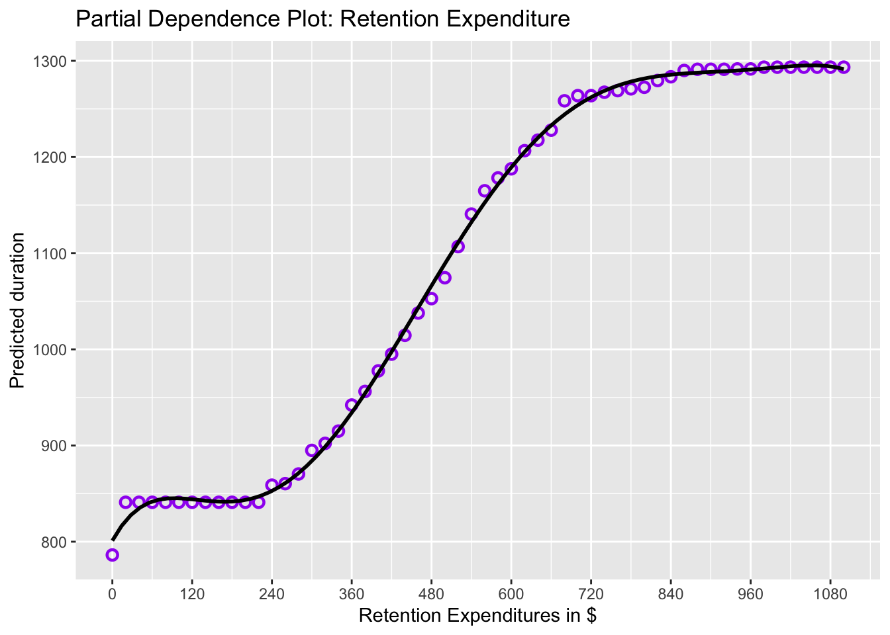
freq_me <- randomForestSRC::partial(rfdur,
partial.xvar = "freq",
partial.values = freq_seq)
freq_me_means <- freq_me$regrOutput$duration %>% colMeans()freq_me_df <-
data.frame(pred_duration = freq_me_means, freq_seq = freq_seq)ggplot(freq_me_df, aes(x = freq_seq, y = pred_duration)) +
geom_point(shape = 21, color = "purple", size = 2, stroke = 1.2)+
geom_smooth(method = "lm", formula = y ~ poly(x,5), se = FALSE, color = "black")+ # try with other values
labs(x = "Frequency of Purchases", y = "Predicted duration", title = 'Partial Dependence Plot: Frequency') +
scale_x_continuous(breaks = seq(0,21,3))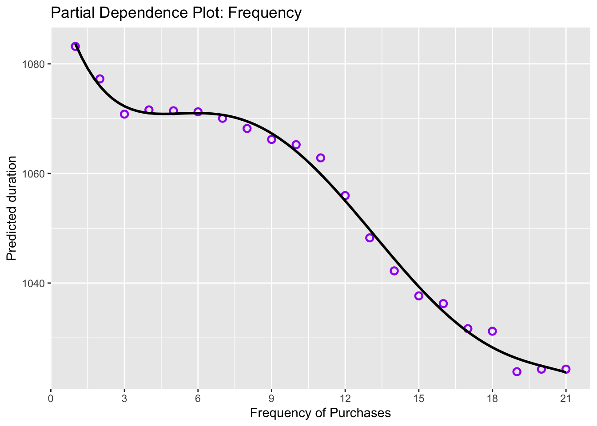
acqx_me <- randomForestSRC::partial(rfdur,
partial.xvar = "acq_exp",
partial.values = acq_exp_seq)
acqx_me_means <- acqx_me$regrOutput$duration %>% colMeans()acqx_me_df <-
data.frame(pred_duration = acqx_me_means, acq_exp_seq = acq_exp_seq)ggplot(acqx_me_df, aes(x = acq_exp_seq, y = pred_duration)) +
geom_point(shape = 21, color = "purple", size = 2, stroke = 1.2)+
geom_smooth(method = "lm", formula = y ~ poly(x,9), se = FALSE, color = "black")+ # try with other values
labs(x = "Acquisition Expenditures in $", y = "Predicted duration", title = 'Partial Dependence Plot: Acquisiton Expenditure') +
scale_x_continuous(breaks = seq(150,1000,150))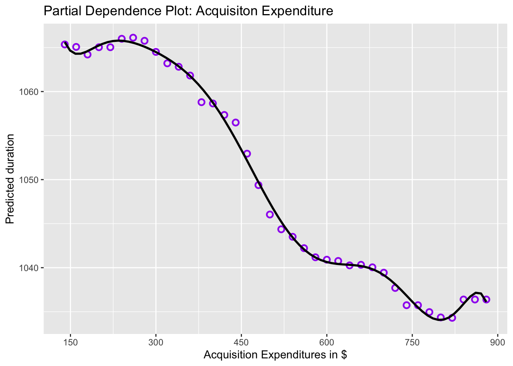
dur_preds <- data.frame(actual = dur_test1$duration,
preds = predict(rfdur, dur_test1)$predicted)print(paste('rmse', sqrt(mean((dur_preds$actual - dur_preds$preds)^2))))[1] "rmse 50.8875513647442"print(paste('mae', mean(abs(dur_preds$actual - dur_preds$preds))))[1] "mae 37.332395908786"print(paste('me', mean(dur_preds$actual - dur_preds$preds)))[1] "me -14.4580854012965"print(paste('mape', mean(abs(dur_preds$actual - dur_preds$preds)*100/(dur_preds$actual + .1))))[1] "mape 3021.00532729391"Jotting down some thoughts to help explain the though process around these plots and how they contribute to the story. PDP Plot insights: The Partial Dependence plots above, built for the three variables included in the dataset that had both the original value and squared terms, highlights the way that the plot may not have a perfectly linear relationship with duration. The retention expenditure partial dependence plot is a perfect example of this. From the model and variable importance relationships we might conclude that the value of duration increases for every unit increase of retention expenditure, however the partial dependence plot shows that after a certain point, duration barely increases with increases in expenditure. Also, note the y-axis scale for this plot; compared to the other two plots, the value of duration varies greatly based on the value of the expenditure. This suggests that retention expenditure is a very important variable to determine the duration of a customer, however it is important to remember that these models do not prove causation: essentially, we may spend more to keep an important customer, but they may be an important customer because they have already been customers for a long time. Furthermore, there may be retention expenditures that occur as a result of the threat of the loss of a customer, and if this happens multiple times then the cost to keep them as a customer may increase the longer we retain them, effectivley meaning that duration causes the increase in retention expenditure and not the other way around.